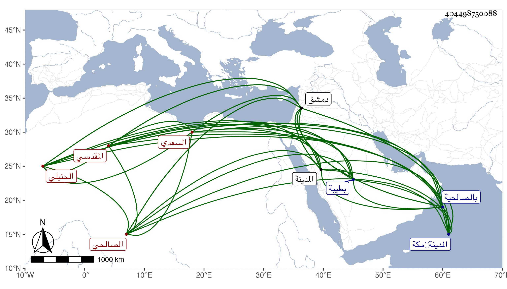

0902Sakhawi.DawLamic.ITO20230111-ara1.EIS1600.404498750088
Biography ID: 404498750088
476
محمد بن محمد بن أحمد بن المحب عبد الله بمن أحمد بن محمد بن إبراهيم بن أحمد بن عبد الرحمن بن إسماعيل بن منصور بن عبد الرحمن الشمس أبو عبد الله بن الشمس السعدي المقدسي الصالحي الحنبلي ويعرف كسلفه بابن المحب . ولد في شوال سنة خمس وخمسين وسبعمائة وأحضر في الثالثة سنة سبع وخمسين على أحمد بن عبد الرحمن المرداوي مجالس المخلدي الثلاثة وغيرها وفي الخامسة على ابن القيم ثلاثيات أحمد وغيرها وسمع من البدر أبي العباس بن الجوخي مسند أحمد إلا اليسير ومن ست العرب حفيدة الفخر الشمائل النبوية وغيرها ومن ابن أميلة والصلاح بن أبي عمر مشيخة الفخر وذيلها ومن أولهما الترمذي وأبا داود في آخرين ، وحج وجاور بالحرمين وحدث بهما بدمشق وغيرها سمع منه الفضلاء روى لنا عنه غير واحد كالأبي وفي الأحياء من يروي بالسماع منه فضلا عن الإجازة ، وذكره شيخنا في معجمه وقال : أجاز لي غير مرة ثم لأولادي وكان من المكثرين بدمشق ذا نظم ونثر ، بل قال شيخنا في إنبائه أنه شرع في شرح البخاري تركه بعده مسودة وكان يقرأ الصحيحين على العامة ولم نظم ضعيف . مات بطيبة المكرمة في رمضان سنة ثمان وعشرين وكان يذكر عن نفسه أنه رأى مناما من نحو عشرين سنة يدل على موته بالمدينة ثم سمعوه منه قبل خروجه لهذه السفرة فكان كذلك قال وهو بقية البيت من آل المحب بالصالحية ، وهو في عقود المقريزي رحمه الله وإيانا .
